श्री लंका डायरी: हाथी, मसाले, चाय और 30 मिनट में थाने की रिपोर्ट
अगस्त 2023 में मैं अपने मित्र डॉ. रण विजय नारायण सिन्हा के साथ एक हफ़्ते के लिए श्री लंका घूमने गया। 12 से 18 अगस्त तक हमने हाथियों का अनाथालय, सिगिरिया, दांबुला, कैंडी, नुवारा एलिया की चाय वाली पहाड़ियाँ, बेंटोटा का समुद्र और कोलंबो शहर देखा। यह उसी सफ़र की डायरी है: क्या देखा, क्या सीखा, और एक छोटा सा "हादसा" भी।
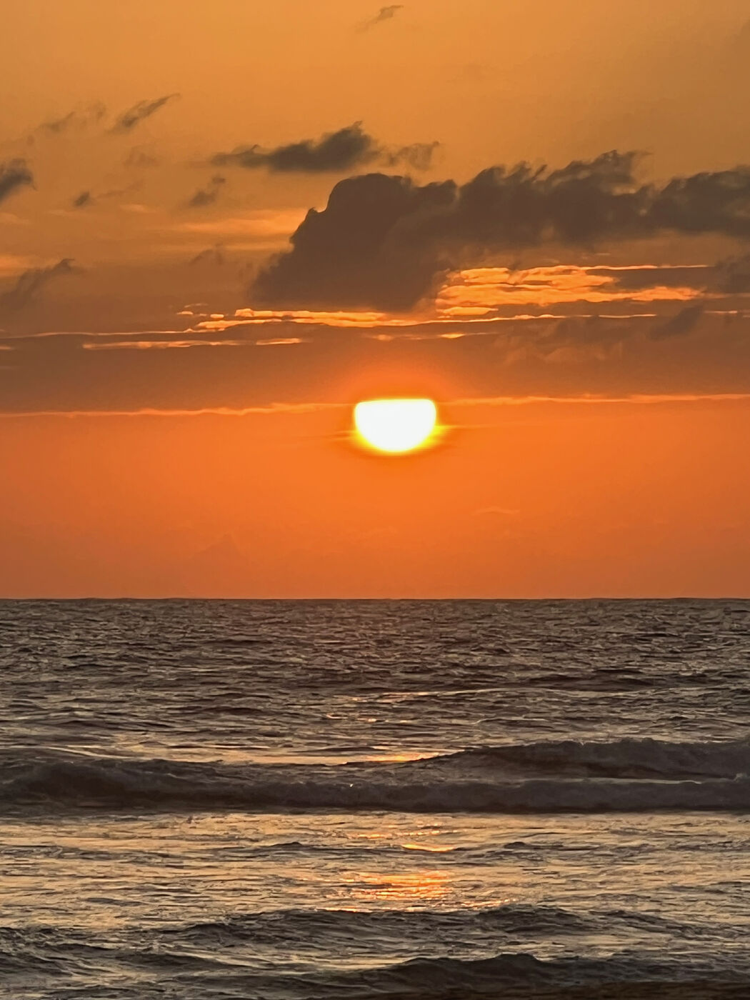
तैयारी: सब कुछ ऑनलाइन
पूरा टूर हमने कोलंबो की एक ट्रैवल कंपनी, ओलंका ट्रैवल्स, से ऑनलाइन बनवाया। उनकी सलाहकार नेत्मी जी ने हमारी पसंद से कार्यक्रम बनाया: कौन सा दिन कहाँ, कौन सा होटल। भारतीयों के लिए श्री लंका का ई-वीज़ा (ETA) भी ऑनलाइन मिल जाता है। सफ़र के दौरान भी नेत्मी जी बीच-बीच में हालचाल लेती रहीं और हर मदद के लिए तैयार रहीं।
हमारी गाड़ी के ड्राइवर थे सेनारथ जी। अच्छी लाल कार के साथ-साथ वे बहुत समझदार इंसान निकले। रास्ते भर उन्होंने इंसानियत और भगवान बुद्ध की शिक्षाओं के बारे में जो बातें बताईं, वे मुझे आज भी याद हैं।
पहला दिन: हवाई जहाज़ से श्री लंका, फिर हाथियों का अनाथालय
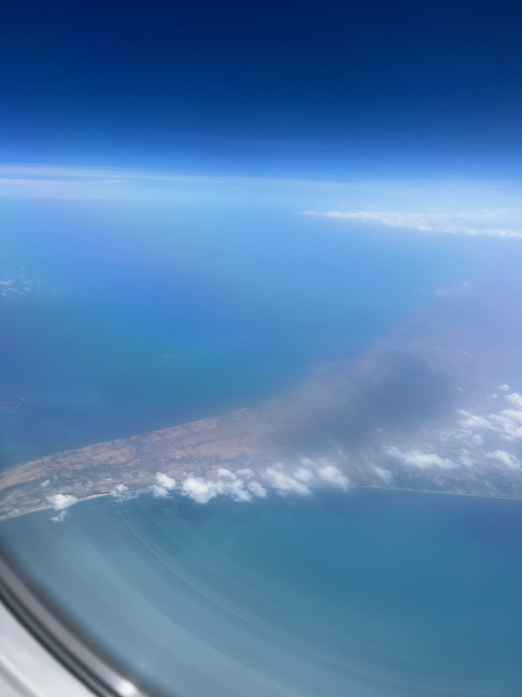
12 अगस्त को बेंगलुरु से उड़ान भरी। कोलंबो हवाई अड्डे पर फूलों की माला पहनाकर हमारा स्वागत हुआ। ओलंका की तरफ़ से एक सुंदर तोहफ़ा भी मिला: हाथी का पेंसिल स्केच, जो उसी दिन, 12 अगस्त को, बनाया गया था। वह आज भी मेरे ड्राइंग रूम में टँगा है।
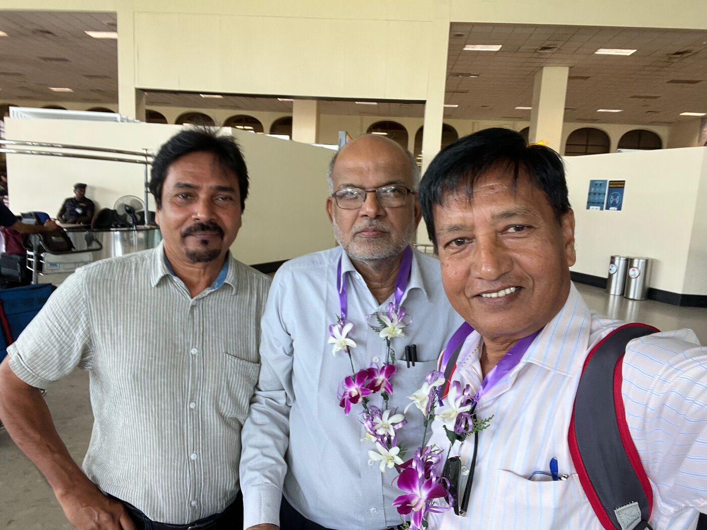
हवाई अड्डे से हम सीधे पिन्नावाला गए, जो कोलंबो से लगभग 100 किलोमीटर दूर है। यहाँ का हाथी अनाथालय श्री लंका की एक ख़ास जगह है। जंगल के जो हाथी बीमार, घायल या अपनी माँ से बिछड़े मिलते हैं, उन्हें यहाँ लाकर देखभाल की जाती है, और ठीक होने पर कई को वापस जंगल में छोड़ दिया जाता है। एक साथ इतने हाथी मैंने पहले कभी नहीं देखे थे।
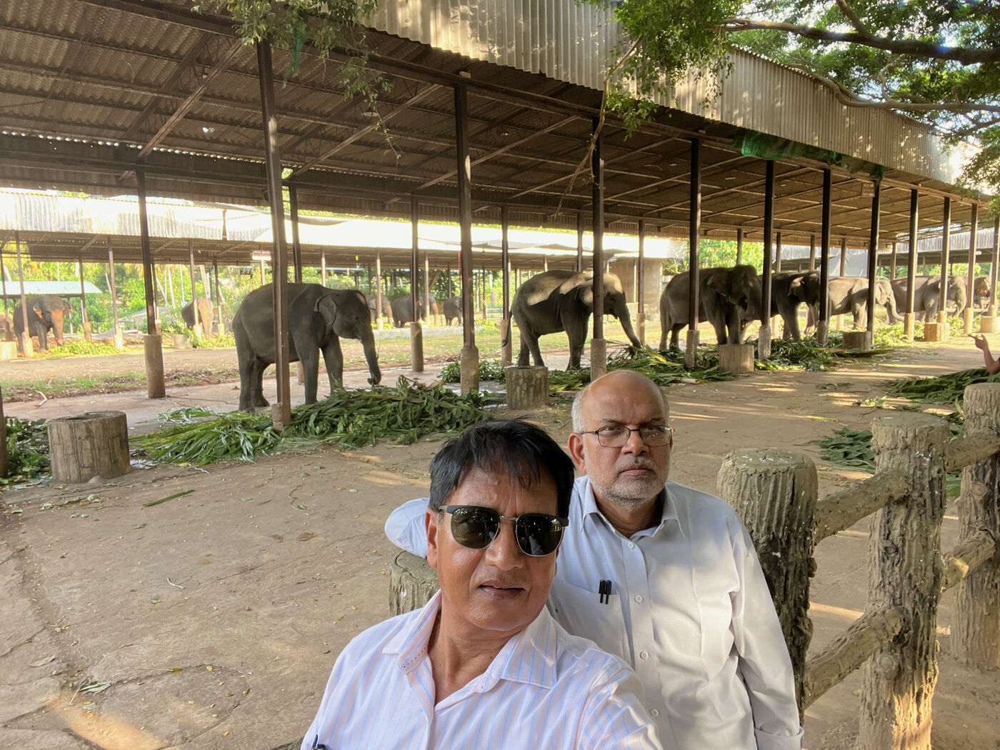
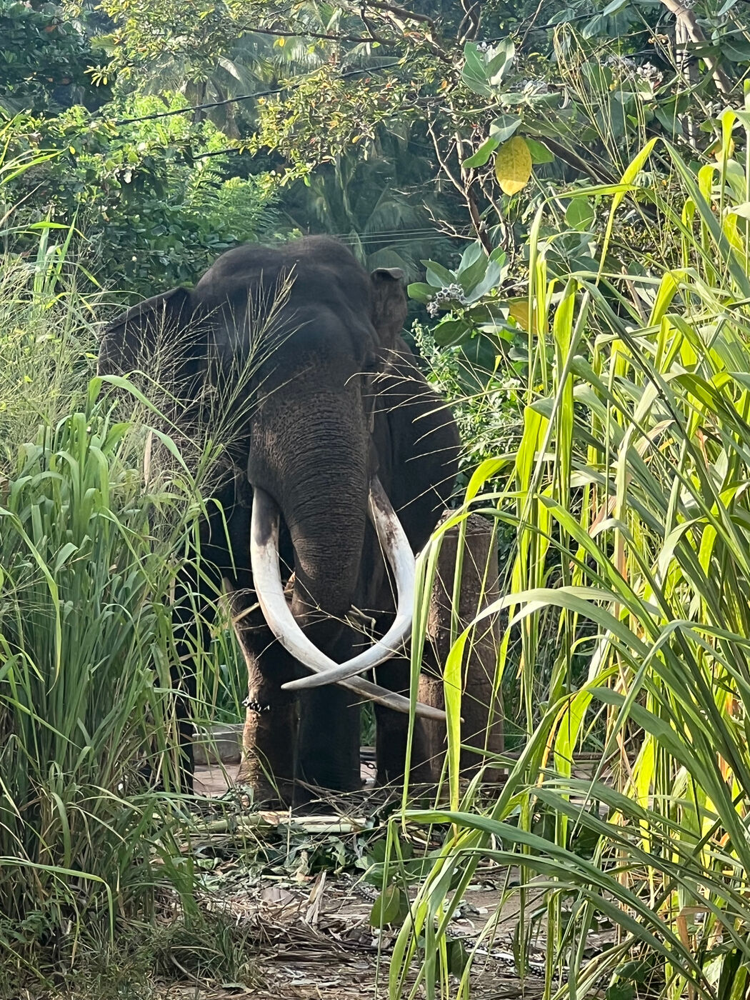
दूसरा दिन: सिगिरिया, सोने वाले बुद्ध और मसालों का गाँव
सुबह रास्ते में सिगिरिया की विशाल चट्टान दिखी। सैकड़ों फ़ुट ऊँची इस चट्टान पर डेढ़ हज़ार साल पहले एक राजा ने किला बनवाया था। आज यह यूनेस्को की विश्व धरोहर है।
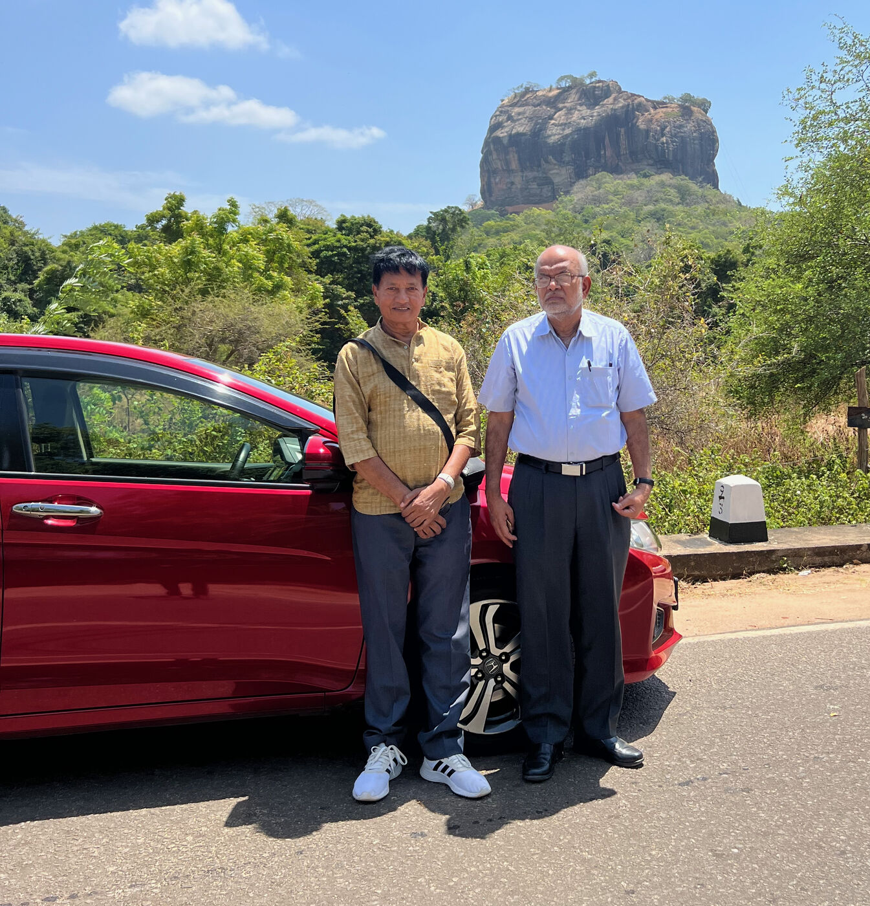
फिर दांबुला पहुँचे, जहाँ मंदिर की छत पर भगवान बुद्ध की बहुत बड़ी सुनहरी मूर्ति है। दूर से ही चमकती दिखती है।
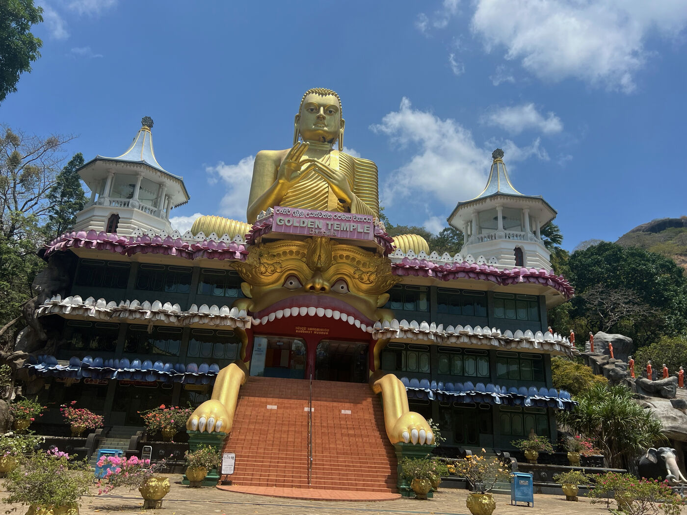
श्री लंका के मसाले और चाय (सीलोन टी) दुनिया में सबसे अच्छे माने जाते हैं। सरकार ने पर्यटकों के लिए एक "स्पाइस विलेज" बनाया है। वहाँ गाइड ने हमें गरम मसालों और कई तरह के पौधों को उगाने और उनके इस्तेमाल के बारे में विस्तार से समझाया: जायफल, जावित्री, ऑलस्पाइस, और "नम नम" जैसे पेड़ जिनका नाम भी पहली बार सुना। वनस्पति विज्ञान का शिक्षक होने के नाते मुझे यह जगह सबसे ज़्यादा पसंद आई।
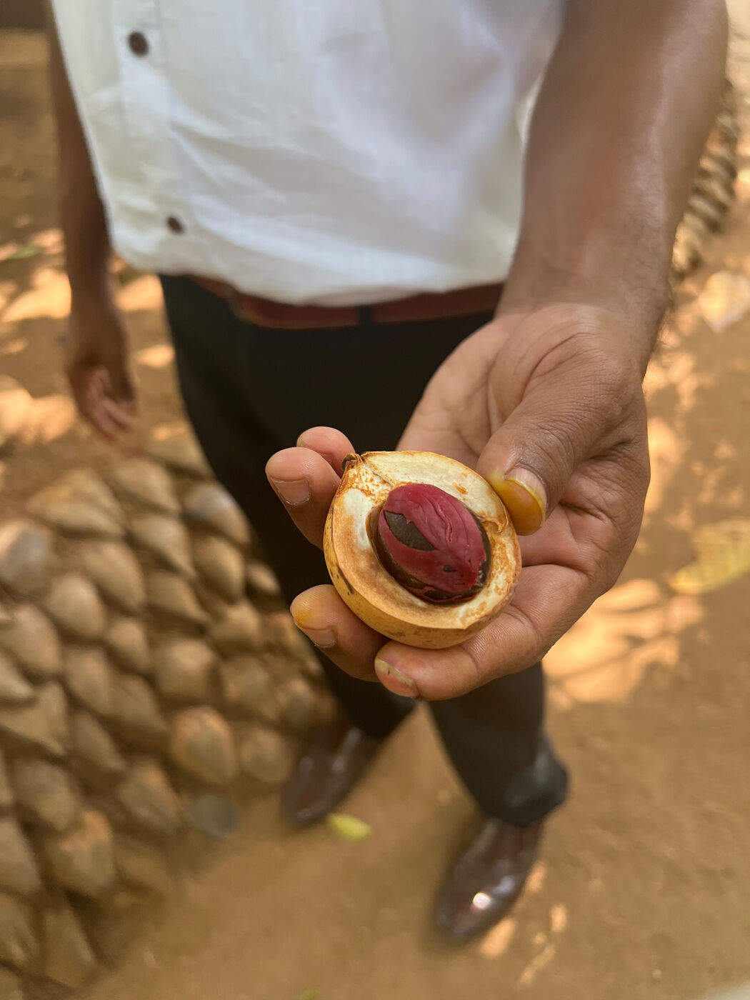
रास्ते में एक और चीज़ ने ध्यान खींचा: पुरानी गाड़ियों का कबाड़, दुकानों के आगे ढेर लगा हुआ। गाड़ियों के ढाँचे अलग और बाकी पुर्ज़े अलग रखे थे। पता चला कि उस समय श्री लंका ने आर्थिक संकट की वजह से तीन-चार साल से कारों के आयात पर रोक लगा रखी थी, इसलिए पुरानी गाड़ियों का एक-एक पुर्ज़ा काम आ रहा था।
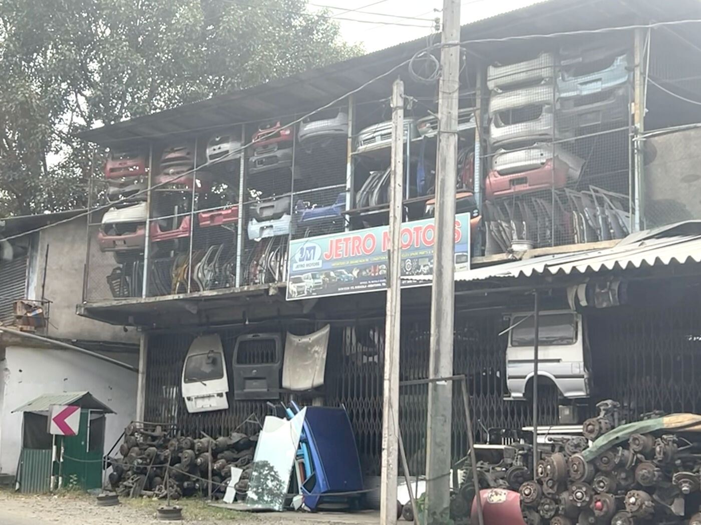
शाम को कैंडी पहुँचे। झील के किनारे घूमे और फिर कैंडी का पारंपरिक नृत्य देखा: ढोल की थाप, रंग-बिरंगी पोशाकें और गज़ब की फुर्ती।
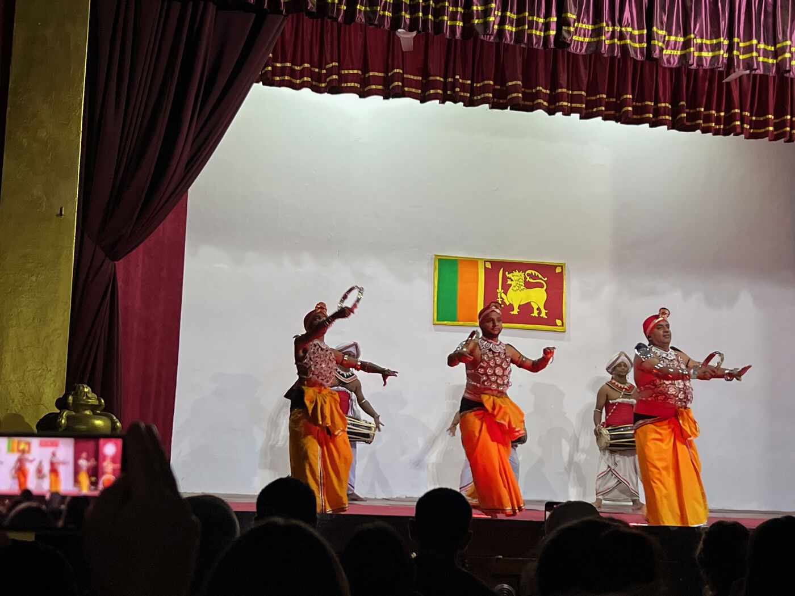
तीसरा दिन: दाँत वाला मंदिर, झरने और चाय के बागान
कैंडी का सबसे बड़ा आकर्षण है "दलदा मालिगावा", यानी दाँत का मंदिर। माना जाता है कि यहाँ भगवान बुद्ध का एक दाँत (अवशेष) रखा है। मंदिर में बहुत शांति थी, और सफ़ेद कपड़ों में आए श्रद्धालु फूल चढ़ा रहे थे।
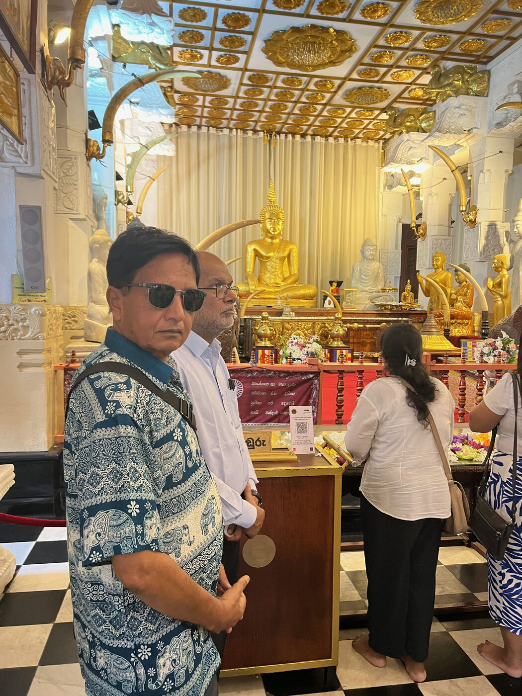
कैंडी से नुवारा एलिया का रास्ता बहुत सुंदर है। घुमावदार सड़कें, हर मोड़ पर झरने, और दूर-दूर तक चाय के हरे-भरे बागान। एक चाय फ़ैक्टरी में हमने देखा कि पत्तियाँ कैसे सुखाई और तैयार की जाती हैं।
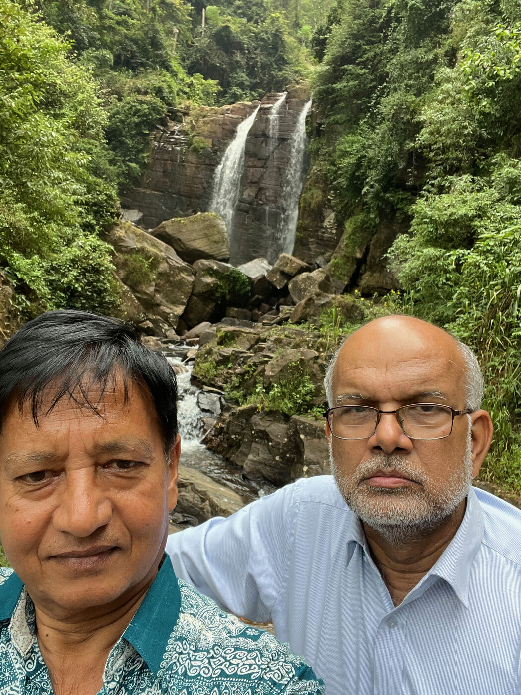
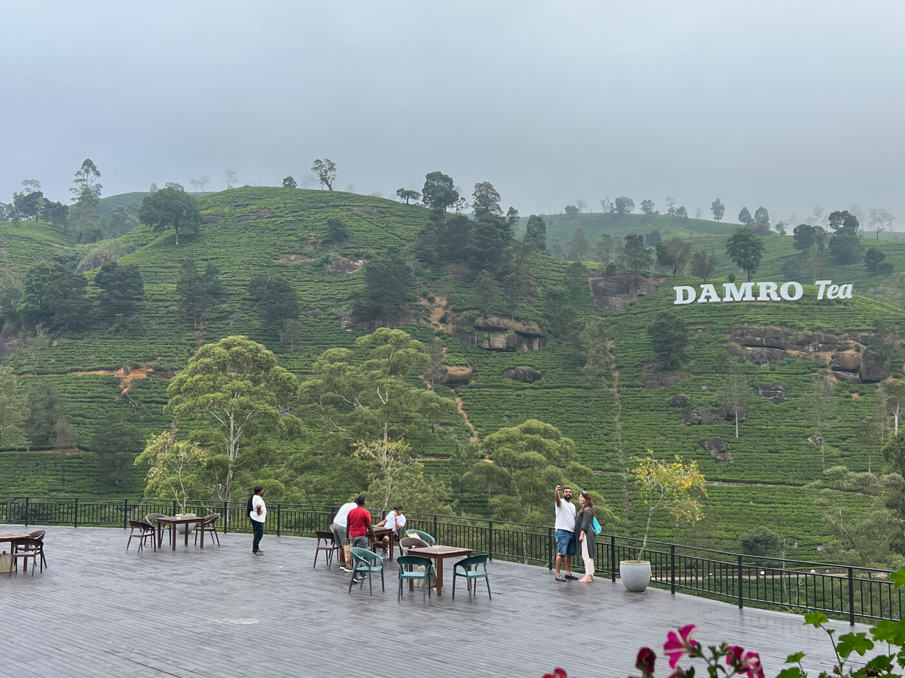
चौथा दिन: नुवारा एलिया में स्वतंत्रता दिवस, और सीता एलिया
15 अगस्त की सुबह नुवारा एलिया में हुई, और विदेश में बैठकर अपने देश का स्वतंत्रता दिवस मनाने का अपना ही एहसास था। नुवारा एलिया श्री लंका की सबसे अच्छी जगहों में से एक है। ठंडा, सुहाना मौसम, और बहुत आरामदायक। श्री लंका के लोग भी इस जगह को सबसे ज़्यादा पसंद करते हैं। यहाँ के ज़्यादातर मकान ब्रिटिश या स्कॉटिश ढंग के बने हैं, इसलिए इसे "लिटिल इंग्लैंड" भी कहते हैं।
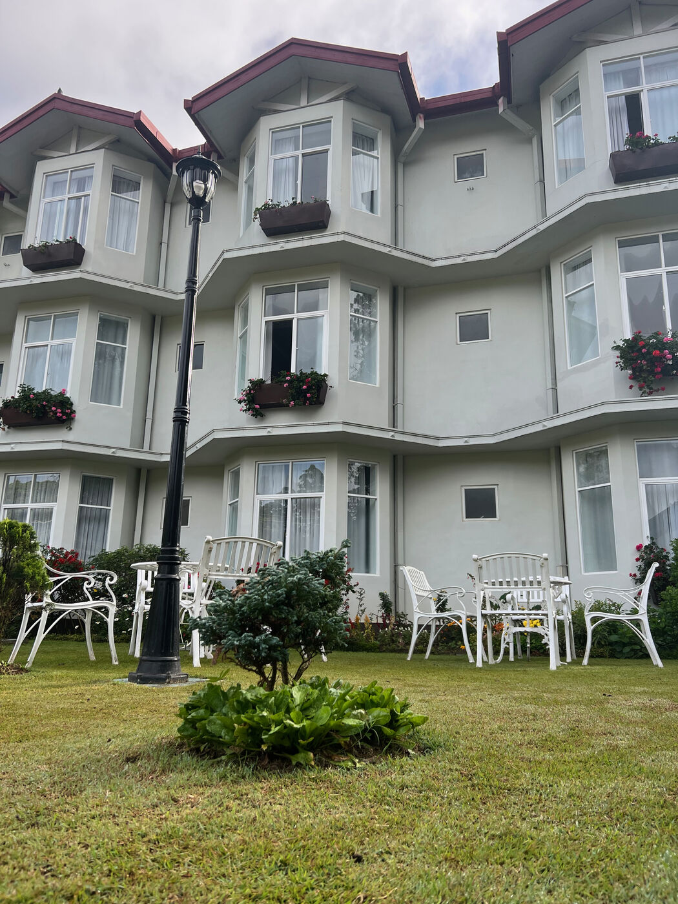
नुवारा एलिया के पास ही "सीता एलिया" है, जिसे रामायण की अशोक वाटिका माना जाता है। यहाँ सीता अम्मन मंदिर है, और हनुमान जी की सुनहरी मूर्ति भी। हम भारतीयों के लिए यह जगह मन को छू लेने वाली है।
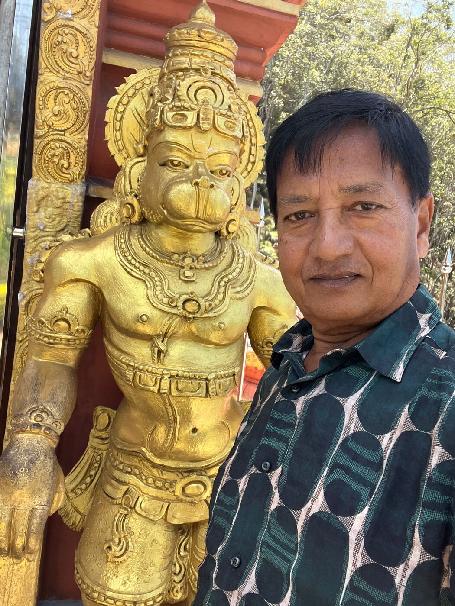
दोपहर बाद पहाड़ों से उतरकर हम समुद्र के किनारे बेंटोटा पहुँच गए, ठीक सूर्यास्त के समय।
पाँचवाँ दिन: बेंटोटा का समुद्र, मादू नदी और कछुए
सुबह समुद्र तट पर घूमे, फिर मादू नदी में नाव की सैर की। नदी के दोनों तरफ़ मैंग्रोव के घने जंगल हैं, और बीच-बीच में छोटे-छोटे टापू।
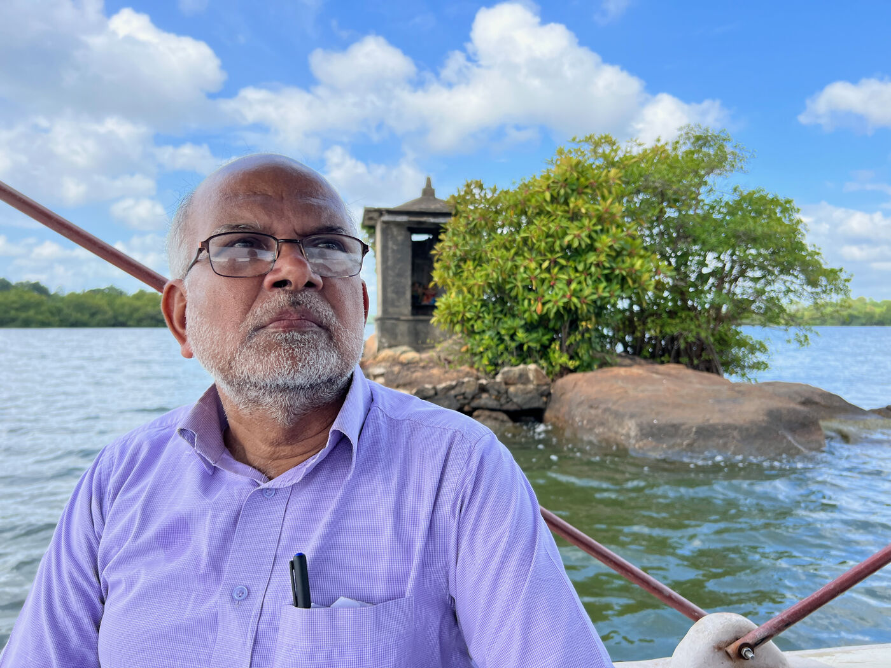
फिर समुद्री कछुओं का एक संरक्षण केंद्र देखा। यहाँ समुद्र तट से कछुओं के अंडे इकट्ठा करके सुरक्षित रेत में रखे जाते हैं, और बच्चे निकलने पर उन्हें समुद्र में छोड़ दिया जाता है। शाम को फिर वही सुनहरा सूर्यास्त, जिसकी तस्वीर इस लेख में सबसे ऊपर है।
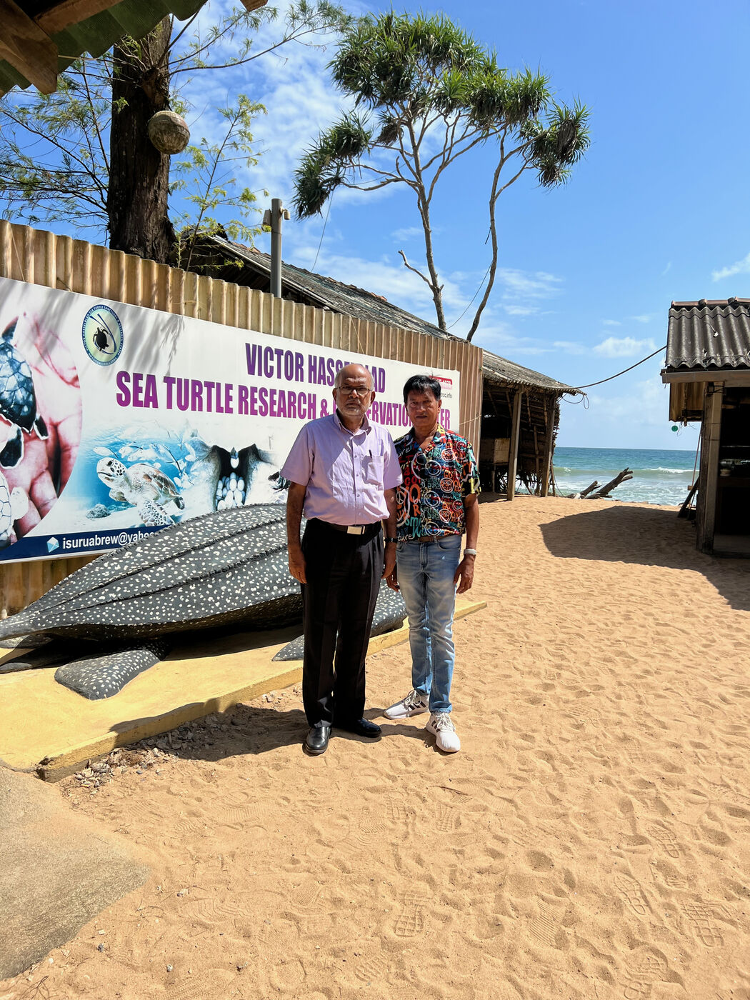
छठा दिन: श्री लंका के थाने का अनुभव
पिछली शाम समुद्र तट पर घूमते हुए मेरे मित्र का मोबाइल जेब से फिसलकर समुद्र में गिर गया। हुआ यूँ कि वे अकेले शाम को समुद्र के किनारे आनंद ले रहे थे, उसी समय कहीं पर पॉकेट से फिसल गया। इसकी रिपोर्ट लिखवाने के लिए हमें बेंटोटा का पुलिस स्टेशन देखने का "मौका" भी मिल गया।
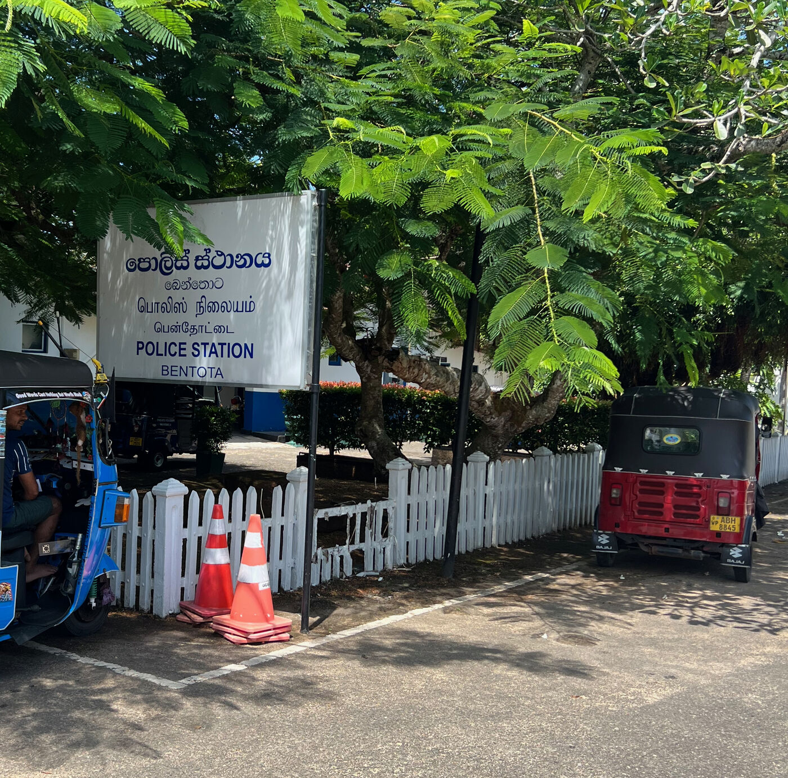
हैरानी की बात यह थी कि पूरा काम सिर्फ़ 30 मिनट में हो गया। थाने की दीवार पर साल 2023 की "क्राइम क्लॉक" लगी थी, जिसमें अपराधों के निशान गिनती के थे। मुझे लगा कि श्री लंका में अपराध लगभग न के बराबर है, और शायद इसीलिए यहाँ के लोग हर जगह प्रसन्न दिखते हैं।
इसके बाद हम कोलंबो आ गए। शहर में स्वतंत्रता स्मारक भवन देखा, जो 1948 में श्री लंका की आज़ादी की याद में बना है, और गंगारामया बौद्ध मंदिर भी।
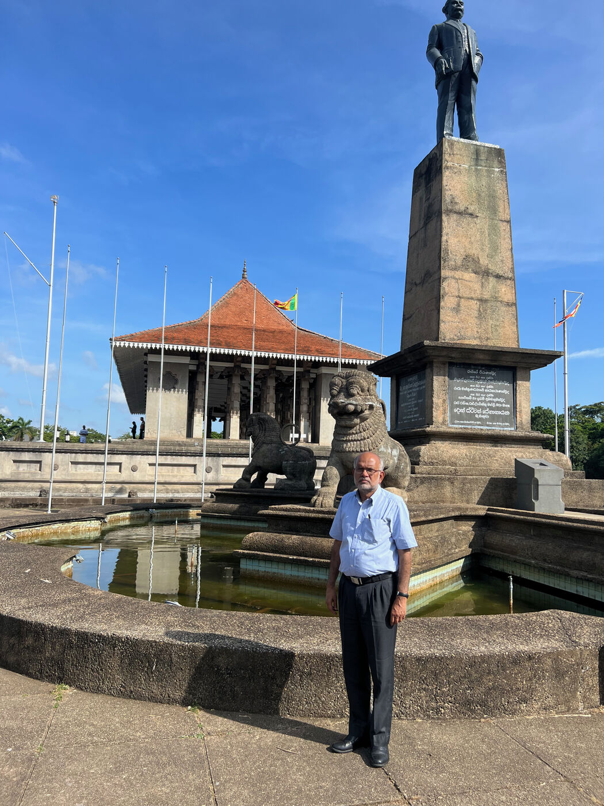
आखिरी दिन: कमल के फूल वाला टावर
लौटने से पहले कोलंबो का "लोटस टावर" देखा, जो ऊपर से कमल के फूल जैसा दिखता है। यह दक्षिण एशिया की सबसे ऊँची इमारतों में से एक है।
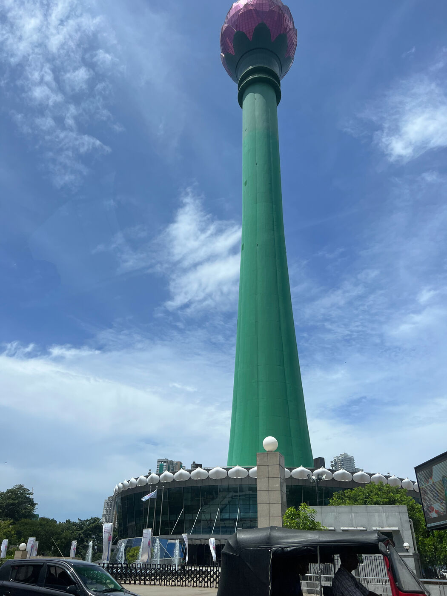
मेरी सीख
- पास का, पर अलग देश: श्री लंका भारत से बहुत पास है, पर सफ़ाई, अनुशासन और शांति के मामले में बहुत कुछ सिखाता है।
- लोग: समझदार, मिलनसार और मददगार।
- रामायण और बुद्ध, दोनों: एक तरफ़ अशोक वाटिका, दूसरी तरफ़ बुद्ध के मंदिर। भारत से इसका रिश्ता बहुत पुराना है।
- प्रकृति: हाथी, जंगल, मसाले, चाय, झरने और समुद्र, सब कुछ एक छोटे से देश में।
- सलाह: किसी भरोसेमंद ट्रैवल कंपनी से ड्राइवर समेत गाड़ी ले लें। 6-7 दिन में देश का अच्छा हिस्सा आराम से घूमा जा सकता है।
ओलंका टीम, नेत्मी जी और सेनारथ जी का दिल से धन्यवाद। आप भी कभी मौका मिले तो श्री लंका ज़रूर घूमिए।
लेख अच्छा लगा? पसंद करें और दोस्तों से शेयर करें: